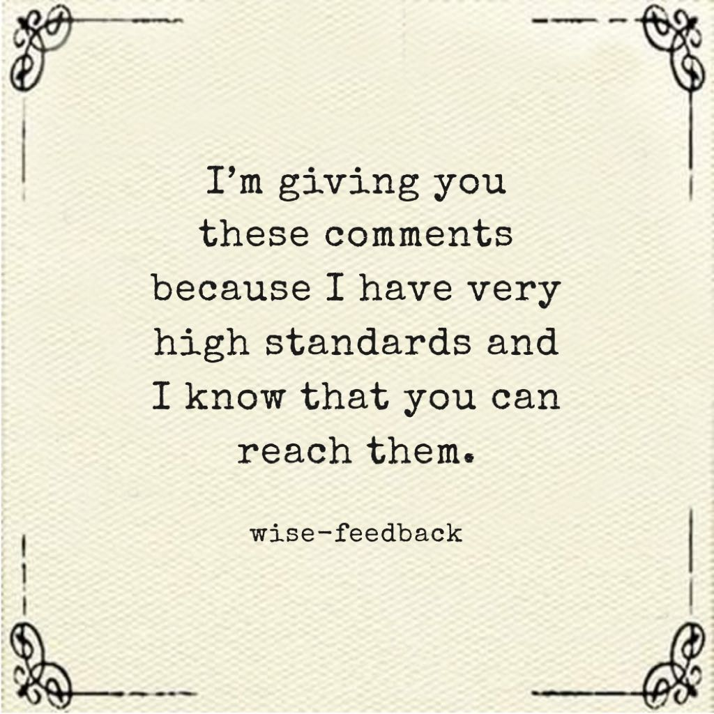
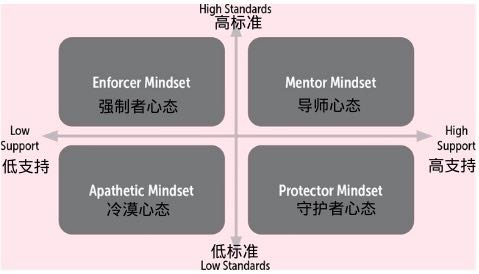
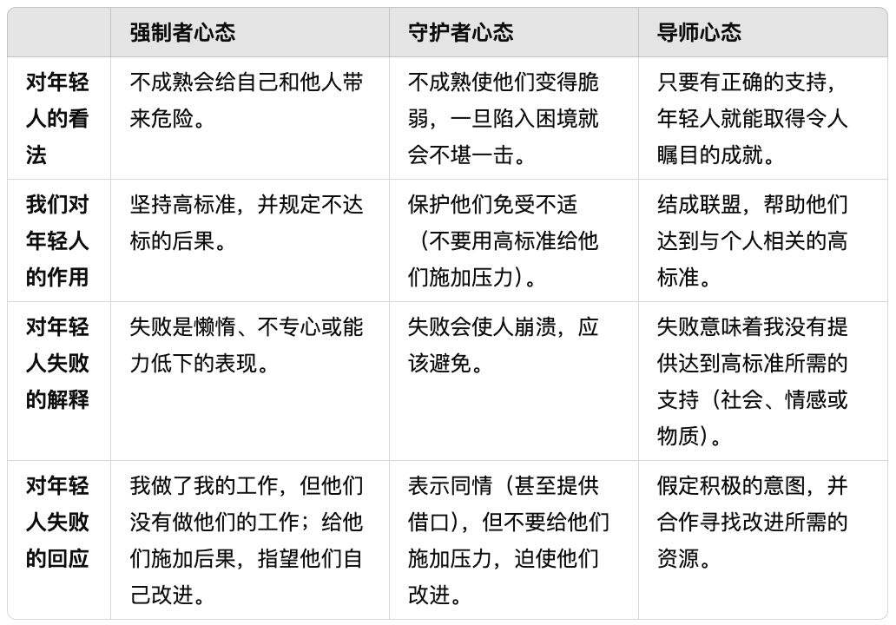
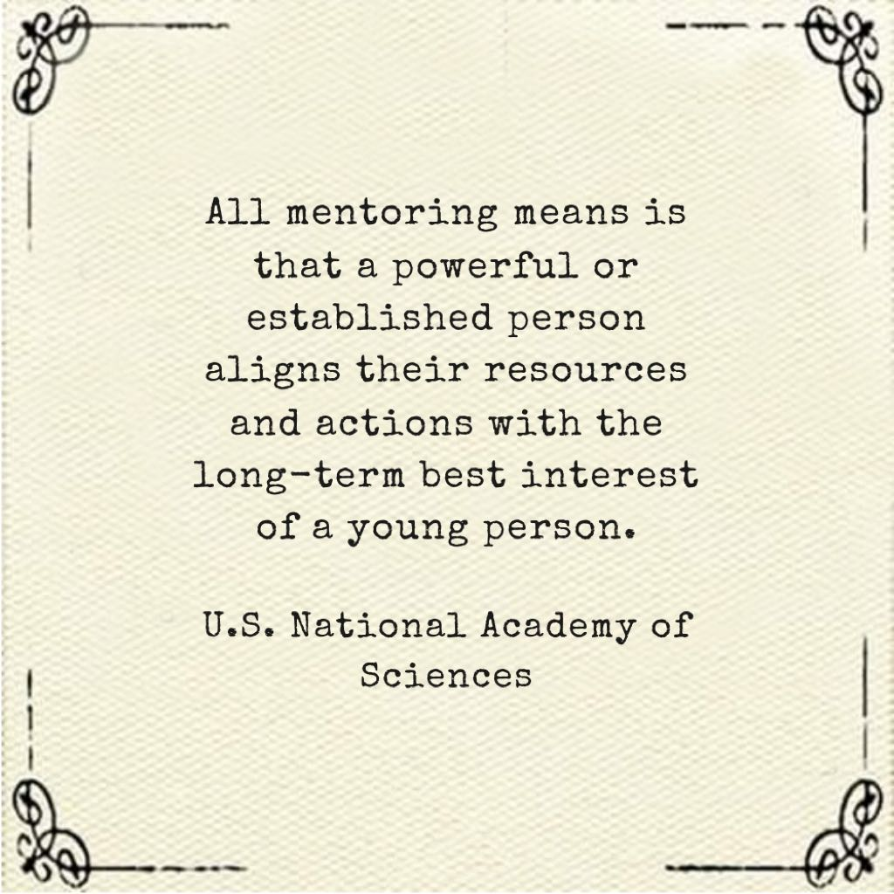
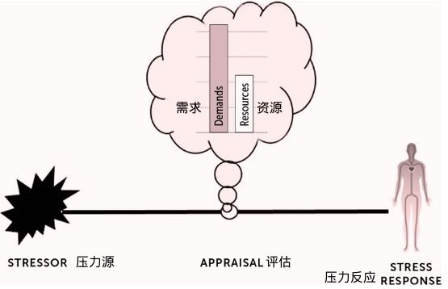
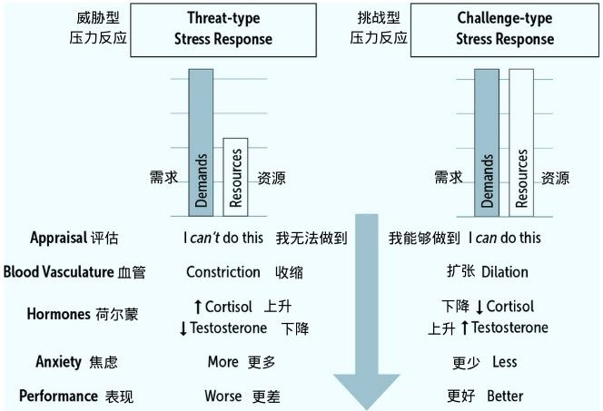

怎样激励10到25岁的人
Table of Contents
《精英日课》解读 https://www.dedao.cn/course/article?id=BM30m4na5NkyKQQed1KjvDg7Eowd2G
今天开始我们讲一本2024年8月6日出版的新书，《10到25岁：激励年轻人的科学——引领下一代的突破性方法，并让你的生活更加轻松》（10 to 25: The Science of Motivating Young People: A Groundbreaking Approach to Leading the Next Generation―And Making Your Own Life Easier）。
1. 导师悖论和智者的反馈
这个现象已经有一个专有名词，叫「导师困境（The Mentor’s Dilemma）」：面对一个没把事情做好的青少年，你要是高标准严要求，提供诚实的反馈，他就会产生强烈的逆反心理，根本不听；你要是和颜悦色不想得罪人，就得继续忍受他们差劲的表现。那你如何是好呢？
以前有个流行的方法叫「赞美三明治」，我们专栏好像说过，就是把批评夹在两层表扬之中：把年轻人叫来，先表扬，哎呀我喜欢你的工作热情！再说你想说的批评，你看你这个活儿干的不是很好，这几个地方需要改进。然后再来一个表扬，感谢你的合作态度！
为了输出一次批评，我给包上两层表扬，这够卑微了吧？但还是不行。现在的青少年是只要听到批评就不行。
那我们到底应该怎么给反馈呢？耶格尔和前面提到的科恩2014年发明了一个能有效解决导师困境的办法，叫「智者的反馈（wise-feedback）」。
实验是这样的。找一些七年级学生 —— 大约相当于中国的初一或者初二 —— 让他们每人写篇作文，然后由老师给每个学生提供了若干条批评性的反馈意见，说明在这几个地方应该修改，然后让学生把作文拿回去修改。所有学生被随机分成两组。每组的反馈意见之上，还附带了一句鼓励的话。
对照组得到的这句话很普通，就是我给你写这些批评是为了让你了解自己作文的反馈，请你好好修改。
实验组得到的，则是智者的反馈。这句话非常简单，我建议你背下来，因为它很有用：「我给你这些评语是因为我有很高的标准，我知道你能达到这些标准。」

师长的作用就是在这个时候告诉他，你不用着急，这一切才刚刚开始，这点小挫折证明不了什么，其实你有很大的潜力！我们对你有很高的期望，你只要留下来，我相信你一定能做好。
2. 对年轻人的四种领导心态
低标准、低支持 = 冷漠心态。我对你没有要求也不提供任何帮助，你怎么样跟我没关系 —— 这当然是最不可取的。
高标准、低支持 = 「强制者心态（Enforcer Mindset）」，也就是勒温说的专制，可以说是一种严父思维。我只提要求不给特别的帮助。这东西我只讲一遍，你们听懂就听懂了，没听懂那就是你能力不行。我会定期考核，通不过的我就要惩罚，甚至直接淘汰。强制者心态有效，但是伤害很大。
低标准、高支持 = 「守护者心态（Protector Mindset）」，很接近勒温说的自由放任，是一种慈母思维。我非常温和，我给你提供各种帮助，甚至有些事儿我直接就替你做了。但我总觉得你能力不足又脆弱，怕你忧伤怕你哭怕你孤单怕你糊涂……这属于溺爱。
我想每个人在成长中都遇到过冷漠的上级，也遭遇过强制者，也怀念过守护者，但是这三种都不是好的领导模式。
高标准、高支持 = 「导师心态（Mentor Mindset）」。我对你有很高的要求，同时我会给你提供很高的支持，有这种心态才配得上被称为「导师」。
智者的反馈就是导师心态的表现，所有研究都表明导师心态是对年轻人最好的领导风格。年轻人会尊敬你、喜欢你、认可你设定的规则，而且他们会被你激励起来自发学习。


耶格尔这本书中说的导师的英文不是博士导师（PhD advisor）那个词，而是 mentor —— 这不是一个学术头衔，而是一个私人关系。在词典里，mentor 的意思是“贤明和忠实的顾问或老师”。
关键词是「忠实」 —— 导师是站在你这边的人。记得当初我刚读研究生，还没进任何研究组，物理系就先给我指定了一个 mentor。他把我叫到办公室说：你有任何问题，学习也好生活也好女朋友也好，都来找我，我会站在你这边。
导师不只是给你提供知识和建议的人，他更是带你走向社会的人。耶格尔引用美国国家科学院2019年的一个报告说：做导师的全部含义，是有权势或者地位的人将其资源和行动与年轻人的长期最佳利益对齐。

3. X理论和Y理论并不是全部
影片中最被人津津乐道的一个场景，是弗莱彻终于告诉安德鲁他为什么要求这么严。弗莱彻的一句话被人做成了一个非常酷炫的海报，如果你是老师我建议你把它打印下来，贴在办公室或者教室里 ——
There are no two words in the english language more harmful than "good job".
「英语中最有害的两个单词，就是 good job。」
我理解弗莱彻的意思是，现在的小孩随便比划两下，家长和老师就在旁边喊 good job，这种廉价的鼓励伤害了整个音乐行业。伟大的音乐家必须坚持最高的标准，可是选手的标准在降低。
这个现象普遍存在，比如有个词叫「成绩通胀（GPA inflation）」，意思是现在大学的老师给学生打分越来越慷慨。
X理论假设人性本恶，认为员工的天性都是自私和懒惰的，都想要推卸责任，工作纯粹是为了挣钱和稳定，对公司的事根本不上心，安于现状得过且过，没有创造性 —— 所以管理者必须强化监督，最好的办法就是胡萝卜加大棒：表现好的要给予重奖，表现不好的直接开除。
X理论是基于理性经济人假设，而Y理论则是基于马斯洛的需求金字塔模型。Y理论认为人们都有更高的追求，会被社会连接、地位、声望、人生意义那些价值所激励：你不用整天盯着，员工自己就会勤奋工作，因为人家想要有所贡献。Y理论相信人的自我控制能力，认为员工不但愿意承担责任，而且还会主动寻求承担责任。
麦格雷戈原本的设想是，从X理论到Y理论是个连续光谱，管理者应该根据自己公司的情况灵活使用。可能你会觉得如果是一家劳动密集型的公司，大家只要努力就好，那就应该奖勤罚懒，用X理论；而如果像微软那样是一家脑力密集型公司，需要有所创新，那就应该宽松一点，用Y理论……
那你就想错了。我理解导师心态适用于所有的人。不管是鼓手、工程师、科学家还是出租车司机，高标准高支持都能让你把工作做得更好，人同此心心同此理。
如果你非得有所取舍，那大约是这样的：在「一对多」的局面下，也就是你有很多个学生或者下属可以从中选择，那你就先用高标准淘汰一批，再给剩下的提供高支持；而在「一对一」的局面下，比如对自家的子弟，那你别无选择，先给高支持，看他真有可能成才再设高标准。
4. 透明度和提问法
对导师来说，透明度声明意味着一上来先告诉学生你的导师心态：我会对你有高标准和高支持，我做任何事情都是为了你的成长，我不是来评判你的，我是来帮助你的。你可能觉得这些话说多了会不会变成例行公事和陈词滥调呢？不会的。
青少年特别善于探测虚伪，往往一眼就能看出来谁是伪君子。成年人不一定有这个能力，这是进化带给年轻人的能力，因为他们需要找榜样，需要迅速知道在场谁是可信赖的导师。他们的情绪很敏感，总在扫描和探索，所以如果你是在例行公事，他们能看出来。
而且他们会反复验证，这就是为什么透明度声明需要经常讲。如果你是老师，你应该在第一堂课就先讲一遍，说你们可以随便提问、考试考不好没关系我帮你改进等等……然后每次有机会就反复讲。你说到做到，信任关系就建立起来了。
这个教训是，哪怕有些话对你来说是显然的，你也需要说出来，因为对方需要听到 —— 否则他是真不知道。这可能是沟通的第一心法。
塞德尔的洞见是，在冲突时刻，孩子和家长争夺的是情境的意义，而不是情境本身
家长认为这件事说明你错了，你得改；孩子认为你对我的谴责说明你不尊重我，甚至不爱我。
塞德尔并不认为家长可以在这个气头上停下来，她的建议是过一段时间，等双方比较冷静了，重新跟孩子就这个问题对话。
对话的方法是提问。
问什么问题很重要。塞德尔要求，你应该只问「能引发回应的真实问题（an authentic question with uptake）」。
首先提问必须是真诚的，是你真的很想知道那个问题的答案。你不能明知故问，特别是别整那种问号后面接着感叹号的质问，说什么“你怎么能那么干，你傻了吗？！”应该改成“你是需要什么帮助吗？是有什么特殊原因吗？”
其次你必须能从对方的回答中有所收获，有所感悟，以至于会改变你接下来的对话和行动。
提问的具体方法，这里有个小窍门，是《掌控谈话》（Never split the difference）一书的作者克里斯·沃斯（Chris Voss）最先提出来的，他是世界最好的人质谈判专家，特别擅长高难度对话。
这个技巧叫「镜像法（mirroring）」，非常简单：就是对方每回答一个问题，你就直接重复他那句话的最后三个单词，加一个问号。
5. 如何影响你的导师
从技术上讲，交流的第一步都是确认咱们是一伙儿的，不是你对我或者我对你，是我们一起对问题。这是「协作式故障排除」的首要原则。导师情绪上来了可能会忘记这一点，那么你就要提醒他这一点：我是你的学生，而且我很钦佩你的业务水平，这就是为什么我费这么大功夫跟你学，我始终对此感到庆幸，我对你、对咱们的这段合作有很高的期待 —— 我不是来给你惹麻烦的。
当然你具体说的时候语气要更缓和，学学芭贝特那个说法。脾气暴躁的人自尊需求和权力意识可能比较强，也许内心有不安全感，你多说几句好话夸一夸，认可他的权威，他就容易平静下来。
从战略上讲，导师困境固然首先是导师的问题，但是如果导师本人不能主动改变，学生就有必要发起改变。我们还是换位思考：导师发脾气是不对的，但他本质上还是盼望学生进步，只不过他不懂得表达方法。那么你就应该忽略那些批评，寻求有效的反馈。只要认准拿到有效反馈提高水平这一条，其他都是细节问题。
而更高级的视角是学生也可以领导导师。谁内心更强大，谁能发起主动性，谁就是领导者，谁就是将来把这段历史拍成电视剧里的主角。
其实一个好办法是多给导师输出一些赞美。我们从小受的教育是鄙视那些赞美上级的下级，认为那是道德败坏，但其实不是。我们专栏讲过的凯文·凯利也好，斯科特·亚当斯也好，都认为多赞美别人是一种美德。导师的日子其实也挺不容易，也需要情绪价值。
阿德勒不是说了吗？赞美和批评一样，本质上都是对人的操控，是训练一个人去按照你的意愿行事。从最高的道德哲学上来说我们不应该操控别人 —— 但既然导师已经在批评你，你就有权赞美他。你要把他操控到不好意思批评你的程度。
6. 如何正确地应对压力
其实我们专栏多次讲过压力的知识，有两点是我们反复强调的，至今也是绝对正确 ——
第一，决定你命运的不是压力事件本身，而是你对事件的反应。
第二，我们对压力可以有两种态度，一个是把它视为威胁，一个是视为挑战。如果你能把压力视为挑战而不是威胁，你的应对会好得多。
在这本书里，耶格尔综合了过去十几年间科学家对压力的最新理解，提出了一个更完整的框架，可以说我们现在有了关于压力的新科学。这里还有个简单有效的新方法。
我们必须区分「压力源（stressor）」，也就是最初造成压力的那个事件，和「压力反应（stress response）」这两种东西。决定你表现的不是压力源，而是压力反应。
决定压力反应的，是你对压力源的评估。

你会评估压力源对你提出多大的要求，以及你手里有多少资源。比如这场考试有多难就是对你的要求，你当前的学习水平如何就是你的资源。
现在科学家的最新压力模型是，如果你评估认为拥有的资源不足以应对这个压力源的要求，你就会把这个压力视为威胁，进入消极模式；而如果你认为你的资源足以应对要求，你就会把压力视为挑战，进入积极模式。

从压力的原理中，我们获得两个认识。
第一是，现代生活基本不需要消极反应。你一生都不太可能遇到一次猛兽袭击。除非是过马路遇到一辆车突然冲过来，怎么都躲不过去了，进入消极状态少流点血，让受伤轻点，这个是对的；但除此之外，你肯定不希望上台演讲的时候突然僵住，话都不会说。你希望一遇到压力就进入积极状态，你最好把压力都视为挑战而不是威胁。
而第二个认识，视为挑战还是视为威胁，那是一种主观的评估。一切都是“你”告诉你的身体该如何反应，你要认为行，那就不是威胁。
我们不应该降低标准，所以要求还是那个要求；关键在于如何评估你有多少资源。下周就是高数的期中考试了，可你现在还没学明白，这难道还不是威胁吗？如果你认为自己的资源只是当前的水平，那的确是束手无策。但是如果你能找老师和同学帮忙补补课，或者跟AI一对一学习，再从别的事情中挤出一些时间给数学，你会发现你的资源并不少。
好导师如果发现学生遭遇压力事件，也可以多给点资源 —— 而不是把那个压力源给取消。
只要你能调动足够的资源，压力就是动力。